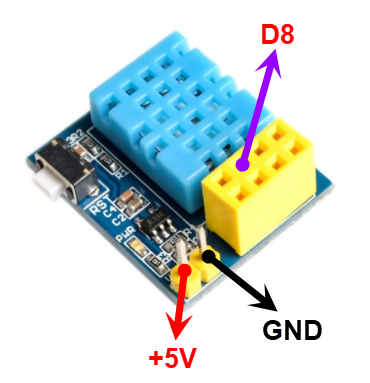
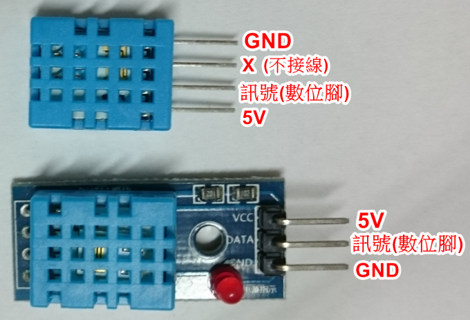
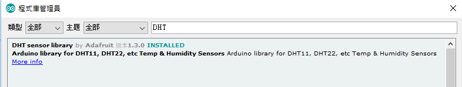
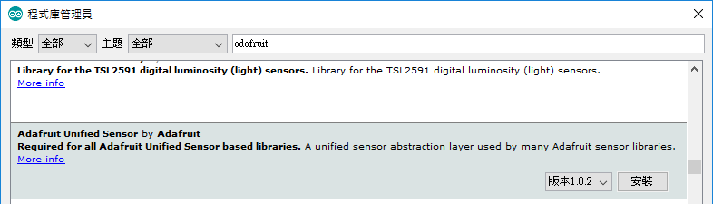

 |
  |
  或 將以下兩個檔案 解壓縮至libraries DHT.zip Adafruit_Sensor.zip |
| #include
"DHT.h" #define dhtPin 8 //讀取DHT11 Data (GPIO2接至D8) #define dhtType DHT11 //選用DHT11 DHT dht(dhtPin, dhtType); // Initialize DHT sensor void setup() { Serial.begin(115200); dht.begin();//啟動DHT delay(2000); } void loop() { float h = dht.readHumidity();//讀取濕度 delay(2000); float t = dht.readTemperature();//讀取攝氏溫度 delay(2000); float f = dht.readTemperature(true);//讀取華氏溫度 delay(2000); if (isnan(h) || isnan(t) || isnan(f)) { Serial.println("無法從DHT傳感器讀取！"); return; } Serial.print("濕度: "); Serial.print(h); Serial.print("%"); Serial.print(" 攝氏溫度: "); Serial.print(t); Serial.print("*C"); Serial.print(" 華氏溫度: "); Serial.print(f); Serial.println("*F"); delay(2000); } |
| #include <LiquidCrystal_I2C.h> #include "DHT.h" #define dhtPin 8 //讀取DHT11 Data (GPIO2接至D8) #define dhtType DHT11 //選用DHT11 DHT dht(dhtPin, dhtType); // Initialize DHT sensor LiquidCrystal_I2C lcd(0x3F,16,2); void setup() { Serial.begin(115200); lcd.init(); lcd.backlight(); dht.begin();//啟動DHT } void loop() { float h = dht.readHumidity();//讀取濕度 delay(2000); float t = dht.readTemperature();//讀取攝氏溫度 delay(2000); if (isnan(h) || isnan(t)) { return; } lcd.setCursor(0,0); lcd.print("h: "); lcd.print(h); lcd.setCursor(0,1); lcd.print("t: "); lcd.print(t); delay(2000);//延時5秒 } |